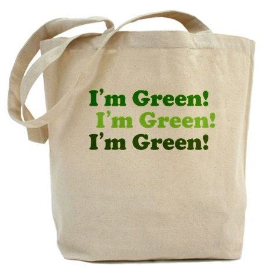
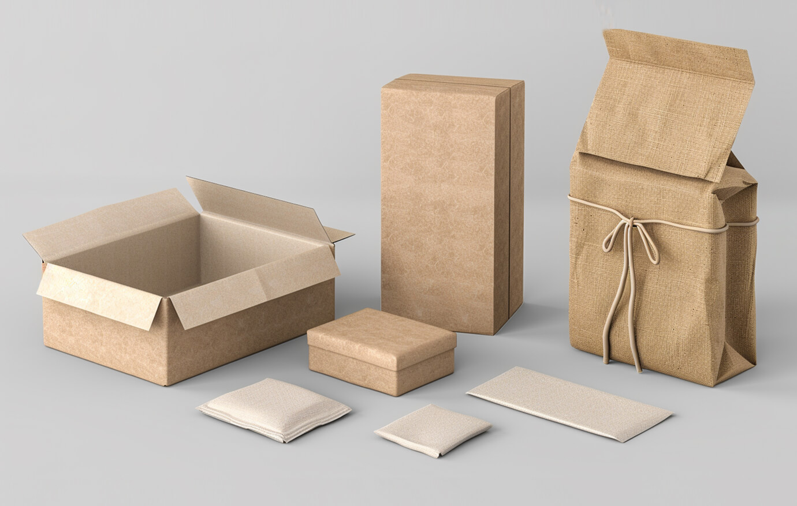
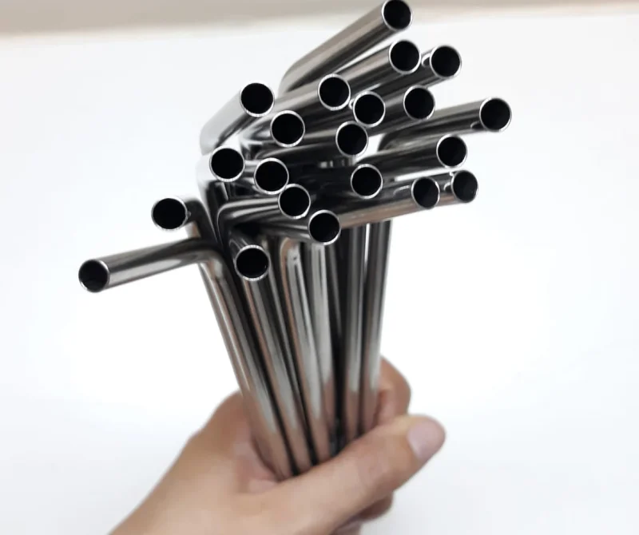
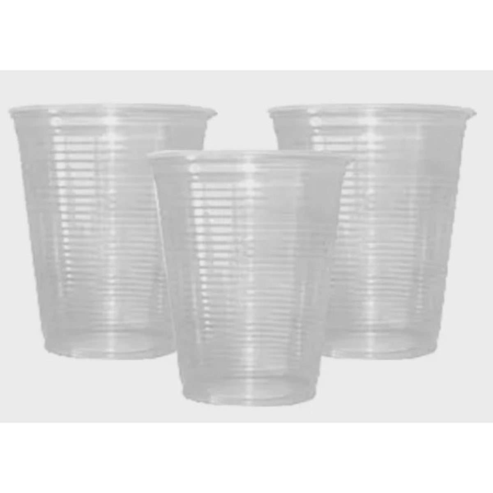
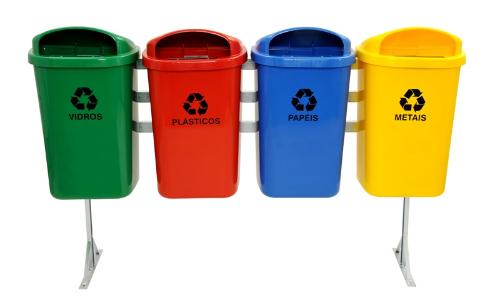
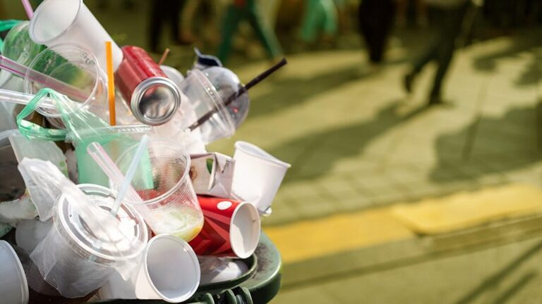

Consumo consciente de plástico
Embora mudanças pequenas nos nossos hábitos de consumo não pareçam significativas, qualquer mudança é bem vinda para contribuir com o meio ambiente.
Caso queira ler mais sobre o tema, dê uma conferida nesta página do National Geographic e nesta cartilha (PDF) do Ministério Público do RS.
Dicas
Reduzir e reutilizar o plástico pode ser difícil por ser uma parte tão integrada na nossa vida moderna. Entretanto, mesmo ações simples podem ajudar a controlar seu consumo, e como lida com o plástico após o seu descarte. Aqui estão algumas dicas para você repensar seu consumo de plástico e hábitos de reciclagem:
-

Busque levar suas próprias sacolas para o mercado. Você pode reutilizar sacolas plásticas evitando o seu uso único, e também pode usar como sacos de lixo para lixeiras pequenas quando for descartar.
-

Prefira items embalados em embalagens de papel ou que não possuem embalagem. Para bebidas, prefira a forma retornável, de vidro, em vez da garrafa PET.
-

Utilize canudos de papel ou de metal. Canudos de metal podem ser uma boa opção caso não se acostume com os de papel.
-

Evite o uso de itens descartáveis não biodegradáveis, como copos e garfos.
-

Crie lixeiras separadas para os diferentes materiais. Caso tenha dificuldade em separar de início, pode começar simplesmente separando resíduos orgânicos.
-
Atualize-se sobre como sua cidade lida com reciclagem, e participe ativamente de políticas sobre esse tema.
-

Caso já esteja separando o lixo reciclável, não se esqueça de higienizar! Uma parte importante do processo de recliclagem que muitos não sabem ou não dão importância é a limpeza, e ao higienizar previamente você contribui com essa etapa.
O Impacto do Plástico em Números
Para entender a urgência da mudança de hábitos, veja alguns dados sobre a produção de resíduos no Brasil e no mundo:
Um brasileiro produz, em média, 1 kg de lixo plástico por semana. O Brasil é o 4º país maior produtor do mundo, mas menos de 2% do lixo plástico produzido aqui é efetivamente reciclado.
Referência: Relatório WWF: Brasil e o lixo plástico
Tempo de Degradação na Natureza
Objetivos de Desenvolvimento Sustentável
O consumo consciente de plástico e outros materiais não biodegradáveis está diretamente relacionado aos Objetivos de Desenvolvimento Sustentável da ONU, como a vida na água e terrestre, cidades e comunidades sustentáveis e até mesmo saneamento, mas sobretudo está ligado ao objetivo 12: Consumo e Produção Responsáveis.
Saiba mais